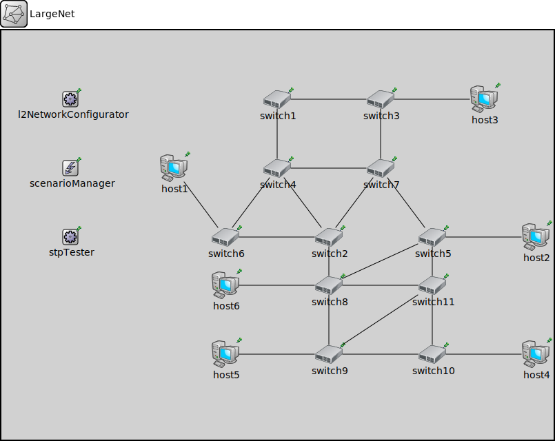

Package: inet.examples.ieee8021d
LargeNet
network(no description)
Usage diagram
The following diagram shows usage relationships between types. Unresolved types are missing from the diagram.
Inheritance diagram
The following diagram shows inheritance relationships for this type. Unresolved types are missing from the diagram.
Extends
| Name | Type | Description |
|---|---|---|
| SwitchNetwork | network | (no description) |
Properties
| Name | Value | Description |
|---|---|---|
| isNetwork |
Unassigned submodule parameters
| Name | Type | Default value | Description |
|---|---|---|---|
| stpTester.checkTime | double | 500ms | |
| scenarioManager.script | xml | xml("") | |
| l2NetworkConfigurator.config | xml | xml(" |
|
| switch1.macTable.agingTime | double | ||
| switch1.macTable.forwardingTableFile | string | ||
| switch1.interfaceTable.displayAddresses | bool | false |
whether to display IP addresses on links |
| switch1.l2NodeConfigurator.interfaceTableModule | string | ||
| switch1.l2NodeConfigurator.l2ConfiguratorModule | string | "l2NetworkConfigurator" |
the absolute path to the ~L2NetworkConfigurator; use "" if there is no configurator |
| switch1.status.initialStatus | string | "UP" |
TODO @signal, @statistic |
| switch1.pcapRecorder.verbose | bool | true |
whether to log packets on the module output |
| switch1.pcapRecorder.pcapFile | string | "" |
the PCAP file to be written |
| switch1.pcapRecorder.fileFormat | string | "pcapng" | |
| switch1.pcapRecorder.snaplen | int | 65535 |
maximum number of bytes to record per packet |
| switch1.pcapRecorder.dumpBadFrames | bool | true |
enable dump of frames with hasBitError |
| switch1.pcapRecorder.moduleNamePatterns | string | "wlan[*] eth[*] ppp[*]" |
space-separated list of sibling module names to listen on |
| switch1.pcapRecorder.sendingSignalNames | string | "packetSentToLower" |
space-separated list of outbound packet signals to subscribe to |
| switch1.pcapRecorder.receivingSignalNames | string | "packetReceivedFromLower" |
space-separated list of inbound packet signals to subscribe to |
| switch1.pcapRecorder.dumpProtocols | string | "ethernetmac ppp ieee80211mac" |
space-separated list of protocol names as defined in the Protocol class |
| switch1.pcapRecorder.packetFilter | object | "*" |
which packets are considered, matches all packets by default |
| switch1.pcapRecorder.helpers | string | "" |
usable PcapRecorder::IHelper helpers for accept packettype and store/convert packet as specified linktype currently available: "inet::AckingMacToEthernetPcapRecorderHelper" |
| switch1.pcapRecorder.alwaysFlush | bool | false |
flush the pcapFile after each write to ensure that all packets are captured in case of a crash |
| switch1.pcapRecorder.displayStringTextFormat | string | "rec: %n pks" | |
| switch1.stp.helloTime | double | ||
| switch1.stp.forwardDelay | double | ||
| switch1.stp.maxAge | double | ||
| switch1.stp.bridgePriority | int | ||
| switch1.stp.visualize | bool | ||
| switch1.sc.displayStringTextFormat | string | "processed %p pk (%l)" |
determines the text that is written on top of the submodule |
| switch1.sc.forwardServiceRegistration | bool | true | |
| switch1.sc.forwardProtocolRegistration | bool | true | |
| switch1.cb.displayStringTextFormat | string | "processed %p pk (%l)" |
determines the text that is written on top of the submodule |
| switch1.cb.forwardServiceRegistration | bool | true | |
| switch1.cb.forwardProtocolRegistration | bool | true | |
| switch1.bl.displayStringTextFormat | string | "processed %p pk (%l)" |
determines the text that is written on top of the submodule |
| switch1.bl.forwardServiceRegistration | bool | true | |
| switch1.bl.forwardProtocolRegistration | bool | true | |
| switch1.li.displayStringTextFormat | string | "processed %p pk (%l)" |
determines the text that is written on top of the submodule |
| switch1.li.forwardServiceRegistration | bool | true | |
| switch1.li.forwardProtocolRegistration | bool | true | |
| switch1.eth.bitrate | double | ||
| switch2.macTable.agingTime | double | ||
| switch2.macTable.forwardingTableFile | string | ||
| switch2.interfaceTable.displayAddresses | bool | false |
whether to display IP addresses on links |
| switch2.l2NodeConfigurator.interfaceTableModule | string | ||
| switch2.l2NodeConfigurator.l2ConfiguratorModule | string | "l2NetworkConfigurator" |
the absolute path to the ~L2NetworkConfigurator; use "" if there is no configurator |
| switch2.status.initialStatus | string | "UP" |
TODO @signal, @statistic |
| switch2.pcapRecorder.verbose | bool | true |
whether to log packets on the module output |
| switch2.pcapRecorder.pcapFile | string | "" |
the PCAP file to be written |
| switch2.pcapRecorder.fileFormat | string | "pcapng" | |
| switch2.pcapRecorder.snaplen | int | 65535 |
maximum number of bytes to record per packet |
| switch2.pcapRecorder.dumpBadFrames | bool | true |
enable dump of frames with hasBitError |
| switch2.pcapRecorder.moduleNamePatterns | string | "wlan[*] eth[*] ppp[*]" |
space-separated list of sibling module names to listen on |
| switch2.pcapRecorder.sendingSignalNames | string | "packetSentToLower" |
space-separated list of outbound packet signals to subscribe to |
| switch2.pcapRecorder.receivingSignalNames | string | "packetReceivedFromLower" |
space-separated list of inbound packet signals to subscribe to |
| switch2.pcapRecorder.dumpProtocols | string | "ethernetmac ppp ieee80211mac" |
space-separated list of protocol names as defined in the Protocol class |
| switch2.pcapRecorder.packetFilter | object | "*" |
which packets are considered, matches all packets by default |
| switch2.pcapRecorder.helpers | string | "" |
usable PcapRecorder::IHelper helpers for accept packettype and store/convert packet as specified linktype currently available: "inet::AckingMacToEthernetPcapRecorderHelper" |
| switch2.pcapRecorder.alwaysFlush | bool | false |
flush the pcapFile after each write to ensure that all packets are captured in case of a crash |
| switch2.pcapRecorder.displayStringTextFormat | string | "rec: %n pks" | |
| switch2.stp.helloTime | double | ||
| switch2.stp.forwardDelay | double | ||
| switch2.stp.maxAge | double | ||
| switch2.stp.bridgePriority | int | ||
| switch2.stp.visualize | bool | ||
| switch2.sc.displayStringTextFormat | string | "processed %p pk (%l)" |
determines the text that is written on top of the submodule |
| switch2.sc.forwardServiceRegistration | bool | true | |
| switch2.sc.forwardProtocolRegistration | bool | true | |
| switch2.cb.displayStringTextFormat | string | "processed %p pk (%l)" |
determines the text that is written on top of the submodule |
| switch2.cb.forwardServiceRegistration | bool | true | |
| switch2.cb.forwardProtocolRegistration | bool | true | |
| switch2.bl.displayStringTextFormat | string | "processed %p pk (%l)" |
determines the text that is written on top of the submodule |
| switch2.bl.forwardServiceRegistration | bool | true | |
| switch2.bl.forwardProtocolRegistration | bool | true | |
| switch2.li.displayStringTextFormat | string | "processed %p pk (%l)" |
determines the text that is written on top of the submodule |
| switch2.li.forwardServiceRegistration | bool | true | |
| switch2.li.forwardProtocolRegistration | bool | true | |
| switch2.eth.bitrate | double | ||
| switch3.macTable.agingTime | double | ||
| switch3.macTable.forwardingTableFile | string | ||
| switch3.interfaceTable.displayAddresses | bool | false |
whether to display IP addresses on links |
| switch3.l2NodeConfigurator.interfaceTableModule | string | ||
| switch3.l2NodeConfigurator.l2ConfiguratorModule | string | "l2NetworkConfigurator" |
the absolute path to the ~L2NetworkConfigurator; use "" if there is no configurator |
| switch3.status.initialStatus | string | "UP" |
TODO @signal, @statistic |
| switch3.pcapRecorder.verbose | bool | true |
whether to log packets on the module output |
| switch3.pcapRecorder.pcapFile | string | "" |
the PCAP file to be written |
| switch3.pcapRecorder.fileFormat | string | "pcapng" | |
| switch3.pcapRecorder.snaplen | int | 65535 |
maximum number of bytes to record per packet |
| switch3.pcapRecorder.dumpBadFrames | bool | true |
enable dump of frames with hasBitError |
| switch3.pcapRecorder.moduleNamePatterns | string | "wlan[*] eth[*] ppp[*]" |
space-separated list of sibling module names to listen on |
| switch3.pcapRecorder.sendingSignalNames | string | "packetSentToLower" |
space-separated list of outbound packet signals to subscribe to |
| switch3.pcapRecorder.receivingSignalNames | string | "packetReceivedFromLower" |
space-separated list of inbound packet signals to subscribe to |
| switch3.pcapRecorder.dumpProtocols | string | "ethernetmac ppp ieee80211mac" |
space-separated list of protocol names as defined in the Protocol class |
| switch3.pcapRecorder.packetFilter | object | "*" |
which packets are considered, matches all packets by default |
| switch3.pcapRecorder.helpers | string | "" |
usable PcapRecorder::IHelper helpers for accept packettype and store/convert packet as specified linktype currently available: "inet::AckingMacToEthernetPcapRecorderHelper" |
| switch3.pcapRecorder.alwaysFlush | bool | false |
flush the pcapFile after each write to ensure that all packets are captured in case of a crash |
| switch3.pcapRecorder.displayStringTextFormat | string | "rec: %n pks" | |
| switch3.stp.helloTime | double | ||
| switch3.stp.forwardDelay | double | ||
| switch3.stp.maxAge | double | ||
| switch3.stp.bridgePriority | int | ||
| switch3.stp.visualize | bool | ||
| switch3.sc.displayStringTextFormat | string | "processed %p pk (%l)" |
determines the text that is written on top of the submodule |
| switch3.sc.forwardServiceRegistration | bool | true | |
| switch3.sc.forwardProtocolRegistration | bool | true | |
| switch3.cb.displayStringTextFormat | string | "processed %p pk (%l)" |
determines the text that is written on top of the submodule |
| switch3.cb.forwardServiceRegistration | bool | true | |
| switch3.cb.forwardProtocolRegistration | bool | true | |
| switch3.bl.displayStringTextFormat | string | "processed %p pk (%l)" |
determines the text that is written on top of the submodule |
| switch3.bl.forwardServiceRegistration | bool | true | |
| switch3.bl.forwardProtocolRegistration | bool | true | |
| switch3.li.displayStringTextFormat | string | "processed %p pk (%l)" |
determines the text that is written on top of the submodule |
| switch3.li.forwardServiceRegistration | bool | true | |
| switch3.li.forwardProtocolRegistration | bool | true | |
| switch3.eth.bitrate | double | ||
| switch4.macTable.agingTime | double | ||
| switch4.macTable.forwardingTableFile | string | ||
| switch4.interfaceTable.displayAddresses | bool | false |
whether to display IP addresses on links |
| switch4.l2NodeConfigurator.interfaceTableModule | string | ||
| switch4.l2NodeConfigurator.l2ConfiguratorModule | string | "l2NetworkConfigurator" |
the absolute path to the ~L2NetworkConfigurator; use "" if there is no configurator |
| switch4.status.initialStatus | string | "UP" |
TODO @signal, @statistic |
| switch4.pcapRecorder.verbose | bool | true |
whether to log packets on the module output |
| switch4.pcapRecorder.pcapFile | string | "" |
the PCAP file to be written |
| switch4.pcapRecorder.fileFormat | string | "pcapng" | |
| switch4.pcapRecorder.snaplen | int | 65535 |
maximum number of bytes to record per packet |
| switch4.pcapRecorder.dumpBadFrames | bool | true |
enable dump of frames with hasBitError |
| switch4.pcapRecorder.moduleNamePatterns | string | "wlan[*] eth[*] ppp[*]" |
space-separated list of sibling module names to listen on |
| switch4.pcapRecorder.sendingSignalNames | string | "packetSentToLower" |
space-separated list of outbound packet signals to subscribe to |
| switch4.pcapRecorder.receivingSignalNames | string | "packetReceivedFromLower" |
space-separated list of inbound packet signals to subscribe to |
| switch4.pcapRecorder.dumpProtocols | string | "ethernetmac ppp ieee80211mac" |
space-separated list of protocol names as defined in the Protocol class |
| switch4.pcapRecorder.packetFilter | object | "*" |
which packets are considered, matches all packets by default |
| switch4.pcapRecorder.helpers | string | "" |
usable PcapRecorder::IHelper helpers for accept packettype and store/convert packet as specified linktype currently available: "inet::AckingMacToEthernetPcapRecorderHelper" |
| switch4.pcapRecorder.alwaysFlush | bool | false |
flush the pcapFile after each write to ensure that all packets are captured in case of a crash |
| switch4.pcapRecorder.displayStringTextFormat | string | "rec: %n pks" | |
| switch4.stp.helloTime | double | ||
| switch4.stp.forwardDelay | double | ||
| switch4.stp.maxAge | double | ||
| switch4.stp.bridgePriority | int | ||
| switch4.stp.visualize | bool | ||
| switch4.sc.displayStringTextFormat | string | "processed %p pk (%l)" |
determines the text that is written on top of the submodule |
| switch4.sc.forwardServiceRegistration | bool | true | |
| switch4.sc.forwardProtocolRegistration | bool | true | |
| switch4.cb.displayStringTextFormat | string | "processed %p pk (%l)" |
determines the text that is written on top of the submodule |
| switch4.cb.forwardServiceRegistration | bool | true | |
| switch4.cb.forwardProtocolRegistration | bool | true | |
| switch4.bl.displayStringTextFormat | string | "processed %p pk (%l)" |
determines the text that is written on top of the submodule |
| switch4.bl.forwardServiceRegistration | bool | true | |
| switch4.bl.forwardProtocolRegistration | bool | true | |
| switch4.li.displayStringTextFormat | string | "processed %p pk (%l)" |
determines the text that is written on top of the submodule |
| switch4.li.forwardServiceRegistration | bool | true | |
| switch4.li.forwardProtocolRegistration | bool | true | |
| switch4.eth.bitrate | double | ||
| switch5.macTable.agingTime | double | ||
| switch5.macTable.forwardingTableFile | string | ||
| switch5.interfaceTable.displayAddresses | bool | false |
whether to display IP addresses on links |
| switch5.l2NodeConfigurator.interfaceTableModule | string | ||
| switch5.l2NodeConfigurator.l2ConfiguratorModule | string | "l2NetworkConfigurator" |
the absolute path to the ~L2NetworkConfigurator; use "" if there is no configurator |
| switch5.status.initialStatus | string | "UP" |
TODO @signal, @statistic |
| switch5.pcapRecorder.verbose | bool | true |
whether to log packets on the module output |
| switch5.pcapRecorder.pcapFile | string | "" |
the PCAP file to be written |
| switch5.pcapRecorder.fileFormat | string | "pcapng" | |
| switch5.pcapRecorder.snaplen | int | 65535 |
maximum number of bytes to record per packet |
| switch5.pcapRecorder.dumpBadFrames | bool | true |
enable dump of frames with hasBitError |
| switch5.pcapRecorder.moduleNamePatterns | string | "wlan[*] eth[*] ppp[*]" |
space-separated list of sibling module names to listen on |
| switch5.pcapRecorder.sendingSignalNames | string | "packetSentToLower" |
space-separated list of outbound packet signals to subscribe to |
| switch5.pcapRecorder.receivingSignalNames | string | "packetReceivedFromLower" |
space-separated list of inbound packet signals to subscribe to |
| switch5.pcapRecorder.dumpProtocols | string | "ethernetmac ppp ieee80211mac" |
space-separated list of protocol names as defined in the Protocol class |
| switch5.pcapRecorder.packetFilter | object | "*" |
which packets are considered, matches all packets by default |
| switch5.pcapRecorder.helpers | string | "" |
usable PcapRecorder::IHelper helpers for accept packettype and store/convert packet as specified linktype currently available: "inet::AckingMacToEthernetPcapRecorderHelper" |
| switch5.pcapRecorder.alwaysFlush | bool | false |
flush the pcapFile after each write to ensure that all packets are captured in case of a crash |
| switch5.pcapRecorder.displayStringTextFormat | string | "rec: %n pks" | |
| switch5.stp.helloTime | double | ||
| switch5.stp.forwardDelay | double | ||
| switch5.stp.maxAge | double | ||
| switch5.stp.bridgePriority | int | ||
| switch5.stp.visualize | bool | ||
| switch5.sc.displayStringTextFormat | string | "processed %p pk (%l)" |
determines the text that is written on top of the submodule |
| switch5.sc.forwardServiceRegistration | bool | true | |
| switch5.sc.forwardProtocolRegistration | bool | true | |
| switch5.cb.displayStringTextFormat | string | "processed %p pk (%l)" |
determines the text that is written on top of the submodule |
| switch5.cb.forwardServiceRegistration | bool | true | |
| switch5.cb.forwardProtocolRegistration | bool | true | |
| switch5.bl.displayStringTextFormat | string | "processed %p pk (%l)" |
determines the text that is written on top of the submodule |
| switch5.bl.forwardServiceRegistration | bool | true | |
| switch5.bl.forwardProtocolRegistration | bool | true | |
| switch5.li.displayStringTextFormat | string | "processed %p pk (%l)" |
determines the text that is written on top of the submodule |
| switch5.li.forwardServiceRegistration | bool | true | |
| switch5.li.forwardProtocolRegistration | bool | true | |
| switch5.eth.bitrate | double | ||
| switch6.macTable.agingTime | double | ||
| switch6.macTable.forwardingTableFile | string | ||
| switch6.interfaceTable.displayAddresses | bool | false |
whether to display IP addresses on links |
| switch6.l2NodeConfigurator.interfaceTableModule | string | ||
| switch6.l2NodeConfigurator.l2ConfiguratorModule | string | "l2NetworkConfigurator" |
the absolute path to the ~L2NetworkConfigurator; use "" if there is no configurator |
| switch6.status.initialStatus | string | "UP" |
TODO @signal, @statistic |
| switch6.pcapRecorder.verbose | bool | true |
whether to log packets on the module output |
| switch6.pcapRecorder.pcapFile | string | "" |
the PCAP file to be written |
| switch6.pcapRecorder.fileFormat | string | "pcapng" | |
| switch6.pcapRecorder.snaplen | int | 65535 |
maximum number of bytes to record per packet |
| switch6.pcapRecorder.dumpBadFrames | bool | true |
enable dump of frames with hasBitError |
| switch6.pcapRecorder.moduleNamePatterns | string | "wlan[*] eth[*] ppp[*]" |
space-separated list of sibling module names to listen on |
| switch6.pcapRecorder.sendingSignalNames | string | "packetSentToLower" |
space-separated list of outbound packet signals to subscribe to |
| switch6.pcapRecorder.receivingSignalNames | string | "packetReceivedFromLower" |
space-separated list of inbound packet signals to subscribe to |
| switch6.pcapRecorder.dumpProtocols | string | "ethernetmac ppp ieee80211mac" |
space-separated list of protocol names as defined in the Protocol class |
| switch6.pcapRecorder.packetFilter | object | "*" |
which packets are considered, matches all packets by default |
| switch6.pcapRecorder.helpers | string | "" |
usable PcapRecorder::IHelper helpers for accept packettype and store/convert packet as specified linktype currently available: "inet::AckingMacToEthernetPcapRecorderHelper" |
| switch6.pcapRecorder.alwaysFlush | bool | false |
flush the pcapFile after each write to ensure that all packets are captured in case of a crash |
| switch6.pcapRecorder.displayStringTextFormat | string | "rec: %n pks" | |
| switch6.stp.helloTime | double | ||
| switch6.stp.forwardDelay | double | ||
| switch6.stp.maxAge | double | ||
| switch6.stp.bridgePriority | int | ||
| switch6.stp.visualize | bool | ||
| switch6.sc.displayStringTextFormat | string | "processed %p pk (%l)" |
determines the text that is written on top of the submodule |
| switch6.sc.forwardServiceRegistration | bool | true | |
| switch6.sc.forwardProtocolRegistration | bool | true | |
| switch6.cb.displayStringTextFormat | string | "processed %p pk (%l)" |
determines the text that is written on top of the submodule |
| switch6.cb.forwardServiceRegistration | bool | true | |
| switch6.cb.forwardProtocolRegistration | bool | true | |
| switch6.bl.displayStringTextFormat | string | "processed %p pk (%l)" |
determines the text that is written on top of the submodule |
| switch6.bl.forwardServiceRegistration | bool | true | |
| switch6.bl.forwardProtocolRegistration | bool | true | |
| switch6.li.displayStringTextFormat | string | "processed %p pk (%l)" |
determines the text that is written on top of the submodule |
| switch6.li.forwardServiceRegistration | bool | true | |
| switch6.li.forwardProtocolRegistration | bool | true | |
| switch6.eth.bitrate | double | ||
| switch7.macTable.agingTime | double | ||
| switch7.macTable.forwardingTableFile | string | ||
| switch7.interfaceTable.displayAddresses | bool | false |
whether to display IP addresses on links |
| switch7.l2NodeConfigurator.interfaceTableModule | string | ||
| switch7.l2NodeConfigurator.l2ConfiguratorModule | string | "l2NetworkConfigurator" |
the absolute path to the ~L2NetworkConfigurator; use "" if there is no configurator |
| switch7.status.initialStatus | string | "UP" |
TODO @signal, @statistic |
| switch7.pcapRecorder.verbose | bool | true |
whether to log packets on the module output |
| switch7.pcapRecorder.pcapFile | string | "" |
the PCAP file to be written |
| switch7.pcapRecorder.fileFormat | string | "pcapng" | |
| switch7.pcapRecorder.snaplen | int | 65535 |
maximum number of bytes to record per packet |
| switch7.pcapRecorder.dumpBadFrames | bool | true |
enable dump of frames with hasBitError |
| switch7.pcapRecorder.moduleNamePatterns | string | "wlan[*] eth[*] ppp[*]" |
space-separated list of sibling module names to listen on |
| switch7.pcapRecorder.sendingSignalNames | string | "packetSentToLower" |
space-separated list of outbound packet signals to subscribe to |
| switch7.pcapRecorder.receivingSignalNames | string | "packetReceivedFromLower" |
space-separated list of inbound packet signals to subscribe to |
| switch7.pcapRecorder.dumpProtocols | string | "ethernetmac ppp ieee80211mac" |
space-separated list of protocol names as defined in the Protocol class |
| switch7.pcapRecorder.packetFilter | object | "*" |
which packets are considered, matches all packets by default |
| switch7.pcapRecorder.helpers | string | "" |
usable PcapRecorder::IHelper helpers for accept packettype and store/convert packet as specified linktype currently available: "inet::AckingMacToEthernetPcapRecorderHelper" |
| switch7.pcapRecorder.alwaysFlush | bool | false |
flush the pcapFile after each write to ensure that all packets are captured in case of a crash |
| switch7.pcapRecorder.displayStringTextFormat | string | "rec: %n pks" | |
| switch7.stp.helloTime | double | ||
| switch7.stp.forwardDelay | double | ||
| switch7.stp.maxAge | double | ||
| switch7.stp.bridgePriority | int | ||
| switch7.stp.visualize | bool | ||
| switch7.sc.displayStringTextFormat | string | "processed %p pk (%l)" |
determines the text that is written on top of the submodule |
| switch7.sc.forwardServiceRegistration | bool | true | |
| switch7.sc.forwardProtocolRegistration | bool | true | |
| switch7.cb.displayStringTextFormat | string | "processed %p pk (%l)" |
determines the text that is written on top of the submodule |
| switch7.cb.forwardServiceRegistration | bool | true | |
| switch7.cb.forwardProtocolRegistration | bool | true | |
| switch7.bl.displayStringTextFormat | string | "processed %p pk (%l)" |
determines the text that is written on top of the submodule |
| switch7.bl.forwardServiceRegistration | bool | true | |
| switch7.bl.forwardProtocolRegistration | bool | true | |
| switch7.li.displayStringTextFormat | string | "processed %p pk (%l)" |
determines the text that is written on top of the submodule |
| switch7.li.forwardServiceRegistration | bool | true | |
| switch7.li.forwardProtocolRegistration | bool | true | |
| switch7.eth.bitrate | double | ||
| host1.status.initialStatus | string | "UP" |
TODO @signal, @statistic |
| host1.interfaceTable.displayAddresses | bool | false |
whether to display IP addresses on links |
| host1.cli.interfaceTableModule | string | ||
| host1.cli.destAddress | string | "" |
destination MAC address, or module path name of destination station; empty means off |
| host1.cli.startTime | double | this.sendInterval |
time of sending the first request |
| host1.cli.stopTime | double | -1s |
time of finishing sending, negative values mean forever |
| host1.cli.localSAP | int | 0xf0 |
local service access point |
| host1.cli.remoteSAP | int | 0xf1 |
remote service access point |
| host1.cli.sendInterval | double | uniform(0s,1s) |
interval between sending requests |
| host1.cli.reqLength | int | 100B |
length of request packets |
| host1.cli.respLength | int | 1KiB |
length of response packets |
| host1.cli.stopOperationExtraTime | double | -1s |
extra time after lifecycle stop operation finished |
| host1.cli.stopOperationTimeout | double | 2s |
timeout value for lifecycle stop operation |
| host1.srv.localSAP | int | 0xf1 | |
| host1.srv.stopOperationExtraTime | double | -1s |
extra time after lifecycle stop operation finished |
| host1.srv.stopOperationTimeout | double | 2s |
timeout value for lifecycle stop operation |
| host1.dp.displayStringTextFormat | string | "processed %p pk (%l)" |
determines the text that is written on top of the submodule |
| host1.dp.forwardServiceRegistration | bool | true | |
| host1.dp.forwardProtocolRegistration | bool | true | |
| host1.li.displayStringTextFormat | string | "processed %p pk (%l)" |
determines the text that is written on top of the submodule |
| host1.li.forwardServiceRegistration | bool | true | |
| host1.li.forwardProtocolRegistration | bool | true | |
| host1.eth.bitrate | double | ||
| host2.status.initialStatus | string | "UP" |
TODO @signal, @statistic |
| host2.interfaceTable.displayAddresses | bool | false |
whether to display IP addresses on links |
| host2.cli.interfaceTableModule | string | ||
| host2.cli.destAddress | string | "" |
destination MAC address, or module path name of destination station; empty means off |
| host2.cli.startTime | double | this.sendInterval |
time of sending the first request |
| host2.cli.stopTime | double | -1s |
time of finishing sending, negative values mean forever |
| host2.cli.localSAP | int | 0xf0 |
local service access point |
| host2.cli.remoteSAP | int | 0xf1 |
remote service access point |
| host2.cli.sendInterval | double | uniform(0s,1s) |
interval between sending requests |
| host2.cli.reqLength | int | 100B |
length of request packets |
| host2.cli.respLength | int | 1KiB |
length of response packets |
| host2.cli.stopOperationExtraTime | double | -1s |
extra time after lifecycle stop operation finished |
| host2.cli.stopOperationTimeout | double | 2s |
timeout value for lifecycle stop operation |
| host2.srv.localSAP | int | 0xf1 | |
| host2.srv.stopOperationExtraTime | double | -1s |
extra time after lifecycle stop operation finished |
| host2.srv.stopOperationTimeout | double | 2s |
timeout value for lifecycle stop operation |
| host2.dp.displayStringTextFormat | string | "processed %p pk (%l)" |
determines the text that is written on top of the submodule |
| host2.dp.forwardServiceRegistration | bool | true | |
| host2.dp.forwardProtocolRegistration | bool | true | |
| host2.li.displayStringTextFormat | string | "processed %p pk (%l)" |
determines the text that is written on top of the submodule |
| host2.li.forwardServiceRegistration | bool | true | |
| host2.li.forwardProtocolRegistration | bool | true | |
| host2.eth.bitrate | double | ||
| host3.status.initialStatus | string | "UP" |
TODO @signal, @statistic |
| host3.interfaceTable.displayAddresses | bool | false |
whether to display IP addresses on links |
| host3.cli.interfaceTableModule | string | ||
| host3.cli.destAddress | string | "" |
destination MAC address, or module path name of destination station; empty means off |
| host3.cli.startTime | double | this.sendInterval |
time of sending the first request |
| host3.cli.stopTime | double | -1s |
time of finishing sending, negative values mean forever |
| host3.cli.localSAP | int | 0xf0 |
local service access point |
| host3.cli.remoteSAP | int | 0xf1 |
remote service access point |
| host3.cli.sendInterval | double | uniform(0s,1s) |
interval between sending requests |
| host3.cli.reqLength | int | 100B |
length of request packets |
| host3.cli.respLength | int | 1KiB |
length of response packets |
| host3.cli.stopOperationExtraTime | double | -1s |
extra time after lifecycle stop operation finished |
| host3.cli.stopOperationTimeout | double | 2s |
timeout value for lifecycle stop operation |
| host3.srv.localSAP | int | 0xf1 | |
| host3.srv.stopOperationExtraTime | double | -1s |
extra time after lifecycle stop operation finished |
| host3.srv.stopOperationTimeout | double | 2s |
timeout value for lifecycle stop operation |
| host3.dp.displayStringTextFormat | string | "processed %p pk (%l)" |
determines the text that is written on top of the submodule |
| host3.dp.forwardServiceRegistration | bool | true | |
| host3.dp.forwardProtocolRegistration | bool | true | |
| host3.li.displayStringTextFormat | string | "processed %p pk (%l)" |
determines the text that is written on top of the submodule |
| host3.li.forwardServiceRegistration | bool | true | |
| host3.li.forwardProtocolRegistration | bool | true | |
| host3.eth.bitrate | double | ||
| host4.status.initialStatus | string | "UP" |
TODO @signal, @statistic |
| host4.interfaceTable.displayAddresses | bool | false |
whether to display IP addresses on links |
| host4.cli.interfaceTableModule | string | ||
| host4.cli.destAddress | string | "" |
destination MAC address, or module path name of destination station; empty means off |
| host4.cli.startTime | double | this.sendInterval |
time of sending the first request |
| host4.cli.stopTime | double | -1s |
time of finishing sending, negative values mean forever |
| host4.cli.localSAP | int | 0xf0 |
local service access point |
| host4.cli.remoteSAP | int | 0xf1 |
remote service access point |
| host4.cli.sendInterval | double | uniform(0s,1s) |
interval between sending requests |
| host4.cli.reqLength | int | 100B |
length of request packets |
| host4.cli.respLength | int | 1KiB |
length of response packets |
| host4.cli.stopOperationExtraTime | double | -1s |
extra time after lifecycle stop operation finished |
| host4.cli.stopOperationTimeout | double | 2s |
timeout value for lifecycle stop operation |
| host4.srv.localSAP | int | 0xf1 | |
| host4.srv.stopOperationExtraTime | double | -1s |
extra time after lifecycle stop operation finished |
| host4.srv.stopOperationTimeout | double | 2s |
timeout value for lifecycle stop operation |
| host4.dp.displayStringTextFormat | string | "processed %p pk (%l)" |
determines the text that is written on top of the submodule |
| host4.dp.forwardServiceRegistration | bool | true | |
| host4.dp.forwardProtocolRegistration | bool | true | |
| host4.li.displayStringTextFormat | string | "processed %p pk (%l)" |
determines the text that is written on top of the submodule |
| host4.li.forwardServiceRegistration | bool | true | |
| host4.li.forwardProtocolRegistration | bool | true | |
| host4.eth.bitrate | double | ||
| host5.status.initialStatus | string | "UP" |
TODO @signal, @statistic |
| host5.interfaceTable.displayAddresses | bool | false |
whether to display IP addresses on links |
| host5.cli.interfaceTableModule | string | ||
| host5.cli.destAddress | string | "" |
destination MAC address, or module path name of destination station; empty means off |
| host5.cli.startTime | double | this.sendInterval |
time of sending the first request |
| host5.cli.stopTime | double | -1s |
time of finishing sending, negative values mean forever |
| host5.cli.localSAP | int | 0xf0 |
local service access point |
| host5.cli.remoteSAP | int | 0xf1 |
remote service access point |
| host5.cli.sendInterval | double | uniform(0s,1s) |
interval between sending requests |
| host5.cli.reqLength | int | 100B |
length of request packets |
| host5.cli.respLength | int | 1KiB |
length of response packets |
| host5.cli.stopOperationExtraTime | double | -1s |
extra time after lifecycle stop operation finished |
| host5.cli.stopOperationTimeout | double | 2s |
timeout value for lifecycle stop operation |
| host5.srv.localSAP | int | 0xf1 | |
| host5.srv.stopOperationExtraTime | double | -1s |
extra time after lifecycle stop operation finished |
| host5.srv.stopOperationTimeout | double | 2s |
timeout value for lifecycle stop operation |
| host5.dp.displayStringTextFormat | string | "processed %p pk (%l)" |
determines the text that is written on top of the submodule |
| host5.dp.forwardServiceRegistration | bool | true | |
| host5.dp.forwardProtocolRegistration | bool | true | |
| host5.li.displayStringTextFormat | string | "processed %p pk (%l)" |
determines the text that is written on top of the submodule |
| host5.li.forwardServiceRegistration | bool | true | |
| host5.li.forwardProtocolRegistration | bool | true | |
| host5.eth.bitrate | double | ||
| host6.status.initialStatus | string | "UP" |
TODO @signal, @statistic |
| host6.interfaceTable.displayAddresses | bool | false |
whether to display IP addresses on links |
| host6.cli.interfaceTableModule | string | ||
| host6.cli.destAddress | string | "" |
destination MAC address, or module path name of destination station; empty means off |
| host6.cli.startTime | double | this.sendInterval |
time of sending the first request |
| host6.cli.stopTime | double | -1s |
time of finishing sending, negative values mean forever |
| host6.cli.localSAP | int | 0xf0 |
local service access point |
| host6.cli.remoteSAP | int | 0xf1 |
remote service access point |
| host6.cli.sendInterval | double | uniform(0s,1s) |
interval between sending requests |
| host6.cli.reqLength | int | 100B |
length of request packets |
| host6.cli.respLength | int | 1KiB |
length of response packets |
| host6.cli.stopOperationExtraTime | double | -1s |
extra time after lifecycle stop operation finished |
| host6.cli.stopOperationTimeout | double | 2s |
timeout value for lifecycle stop operation |
| host6.srv.localSAP | int | 0xf1 | |
| host6.srv.stopOperationExtraTime | double | -1s |
extra time after lifecycle stop operation finished |
| host6.srv.stopOperationTimeout | double | 2s |
timeout value for lifecycle stop operation |
| host6.dp.displayStringTextFormat | string | "processed %p pk (%l)" |
determines the text that is written on top of the submodule |
| host6.dp.forwardServiceRegistration | bool | true | |
| host6.dp.forwardProtocolRegistration | bool | true | |
| host6.li.displayStringTextFormat | string | "processed %p pk (%l)" |
determines the text that is written on top of the submodule |
| host6.li.forwardServiceRegistration | bool | true | |
| host6.li.forwardProtocolRegistration | bool | true | |
| host6.eth.bitrate | double | ||
| switch8.macTable.agingTime | double | ||
| switch8.macTable.forwardingTableFile | string | ||
| switch8.interfaceTable.displayAddresses | bool | false |
whether to display IP addresses on links |
| switch8.l2NodeConfigurator.interfaceTableModule | string | ||
| switch8.l2NodeConfigurator.l2ConfiguratorModule | string | "l2NetworkConfigurator" |
the absolute path to the ~L2NetworkConfigurator; use "" if there is no configurator |
| switch8.status.initialStatus | string | "UP" |
TODO @signal, @statistic |
| switch8.pcapRecorder.verbose | bool | true |
whether to log packets on the module output |
| switch8.pcapRecorder.pcapFile | string | "" |
the PCAP file to be written |
| switch8.pcapRecorder.fileFormat | string | "pcapng" | |
| switch8.pcapRecorder.snaplen | int | 65535 |
maximum number of bytes to record per packet |
| switch8.pcapRecorder.dumpBadFrames | bool | true |
enable dump of frames with hasBitError |
| switch8.pcapRecorder.moduleNamePatterns | string | "wlan[*] eth[*] ppp[*]" |
space-separated list of sibling module names to listen on |
| switch8.pcapRecorder.sendingSignalNames | string | "packetSentToLower" |
space-separated list of outbound packet signals to subscribe to |
| switch8.pcapRecorder.receivingSignalNames | string | "packetReceivedFromLower" |
space-separated list of inbound packet signals to subscribe to |
| switch8.pcapRecorder.dumpProtocols | string | "ethernetmac ppp ieee80211mac" |
space-separated list of protocol names as defined in the Protocol class |
| switch8.pcapRecorder.packetFilter | object | "*" |
which packets are considered, matches all packets by default |
| switch8.pcapRecorder.helpers | string | "" |
usable PcapRecorder::IHelper helpers for accept packettype and store/convert packet as specified linktype currently available: "inet::AckingMacToEthernetPcapRecorderHelper" |
| switch8.pcapRecorder.alwaysFlush | bool | false |
flush the pcapFile after each write to ensure that all packets are captured in case of a crash |
| switch8.pcapRecorder.displayStringTextFormat | string | "rec: %n pks" | |
| switch8.stp.helloTime | double | ||
| switch8.stp.forwardDelay | double | ||
| switch8.stp.maxAge | double | ||
| switch8.stp.bridgePriority | int | ||
| switch8.stp.visualize | bool | ||
| switch8.sc.displayStringTextFormat | string | "processed %p pk (%l)" |
determines the text that is written on top of the submodule |
| switch8.sc.forwardServiceRegistration | bool | true | |
| switch8.sc.forwardProtocolRegistration | bool | true | |
| switch8.cb.displayStringTextFormat | string | "processed %p pk (%l)" |
determines the text that is written on top of the submodule |
| switch8.cb.forwardServiceRegistration | bool | true | |
| switch8.cb.forwardProtocolRegistration | bool | true | |
| switch8.bl.displayStringTextFormat | string | "processed %p pk (%l)" |
determines the text that is written on top of the submodule |
| switch8.bl.forwardServiceRegistration | bool | true | |
| switch8.bl.forwardProtocolRegistration | bool | true | |
| switch8.li.displayStringTextFormat | string | "processed %p pk (%l)" |
determines the text that is written on top of the submodule |
| switch8.li.forwardServiceRegistration | bool | true | |
| switch8.li.forwardProtocolRegistration | bool | true | |
| switch8.eth.bitrate | double | ||
| switch9.macTable.agingTime | double | ||
| switch9.macTable.forwardingTableFile | string | ||
| switch9.interfaceTable.displayAddresses | bool | false |
whether to display IP addresses on links |
| switch9.l2NodeConfigurator.interfaceTableModule | string | ||
| switch9.l2NodeConfigurator.l2ConfiguratorModule | string | "l2NetworkConfigurator" |
the absolute path to the ~L2NetworkConfigurator; use "" if there is no configurator |
| switch9.status.initialStatus | string | "UP" |
TODO @signal, @statistic |
| switch9.pcapRecorder.verbose | bool | true |
whether to log packets on the module output |
| switch9.pcapRecorder.pcapFile | string | "" |
the PCAP file to be written |
| switch9.pcapRecorder.fileFormat | string | "pcapng" | |
| switch9.pcapRecorder.snaplen | int | 65535 |
maximum number of bytes to record per packet |
| switch9.pcapRecorder.dumpBadFrames | bool | true |
enable dump of frames with hasBitError |
| switch9.pcapRecorder.moduleNamePatterns | string | "wlan[*] eth[*] ppp[*]" |
space-separated list of sibling module names to listen on |
| switch9.pcapRecorder.sendingSignalNames | string | "packetSentToLower" |
space-separated list of outbound packet signals to subscribe to |
| switch9.pcapRecorder.receivingSignalNames | string | "packetReceivedFromLower" |
space-separated list of inbound packet signals to subscribe to |
| switch9.pcapRecorder.dumpProtocols | string | "ethernetmac ppp ieee80211mac" |
space-separated list of protocol names as defined in the Protocol class |
| switch9.pcapRecorder.packetFilter | object | "*" |
which packets are considered, matches all packets by default |
| switch9.pcapRecorder.helpers | string | "" |
usable PcapRecorder::IHelper helpers for accept packettype and store/convert packet as specified linktype currently available: "inet::AckingMacToEthernetPcapRecorderHelper" |
| switch9.pcapRecorder.alwaysFlush | bool | false |
flush the pcapFile after each write to ensure that all packets are captured in case of a crash |
| switch9.pcapRecorder.displayStringTextFormat | string | "rec: %n pks" | |
| switch9.stp.helloTime | double | ||
| switch9.stp.forwardDelay | double | ||
| switch9.stp.maxAge | double | ||
| switch9.stp.bridgePriority | int | ||
| switch9.stp.visualize | bool | ||
| switch9.sc.displayStringTextFormat | string | "processed %p pk (%l)" |
determines the text that is written on top of the submodule |
| switch9.sc.forwardServiceRegistration | bool | true | |
| switch9.sc.forwardProtocolRegistration | bool | true | |
| switch9.cb.displayStringTextFormat | string | "processed %p pk (%l)" |
determines the text that is written on top of the submodule |
| switch9.cb.forwardServiceRegistration | bool | true | |
| switch9.cb.forwardProtocolRegistration | bool | true | |
| switch9.bl.displayStringTextFormat | string | "processed %p pk (%l)" |
determines the text that is written on top of the submodule |
| switch9.bl.forwardServiceRegistration | bool | true | |
| switch9.bl.forwardProtocolRegistration | bool | true | |
| switch9.li.displayStringTextFormat | string | "processed %p pk (%l)" |
determines the text that is written on top of the submodule |
| switch9.li.forwardServiceRegistration | bool | true | |
| switch9.li.forwardProtocolRegistration | bool | true | |
| switch9.eth.bitrate | double | ||
| switch10.macTable.agingTime | double | ||
| switch10.macTable.forwardingTableFile | string | ||
| switch10.interfaceTable.displayAddresses | bool | false |
whether to display IP addresses on links |
| switch10.l2NodeConfigurator.interfaceTableModule | string | ||
| switch10.l2NodeConfigurator.l2ConfiguratorModule | string | "l2NetworkConfigurator" |
the absolute path to the ~L2NetworkConfigurator; use "" if there is no configurator |
| switch10.status.initialStatus | string | "UP" |
TODO @signal, @statistic |
| switch10.pcapRecorder.verbose | bool | true |
whether to log packets on the module output |
| switch10.pcapRecorder.pcapFile | string | "" |
the PCAP file to be written |
| switch10.pcapRecorder.fileFormat | string | "pcapng" | |
| switch10.pcapRecorder.snaplen | int | 65535 |
maximum number of bytes to record per packet |
| switch10.pcapRecorder.dumpBadFrames | bool | true |
enable dump of frames with hasBitError |
| switch10.pcapRecorder.moduleNamePatterns | string | "wlan[*] eth[*] ppp[*]" |
space-separated list of sibling module names to listen on |
| switch10.pcapRecorder.sendingSignalNames | string | "packetSentToLower" |
space-separated list of outbound packet signals to subscribe to |
| switch10.pcapRecorder.receivingSignalNames | string | "packetReceivedFromLower" |
space-separated list of inbound packet signals to subscribe to |
| switch10.pcapRecorder.dumpProtocols | string | "ethernetmac ppp ieee80211mac" |
space-separated list of protocol names as defined in the Protocol class |
| switch10.pcapRecorder.packetFilter | object | "*" |
which packets are considered, matches all packets by default |
| switch10.pcapRecorder.helpers | string | "" |
usable PcapRecorder::IHelper helpers for accept packettype and store/convert packet as specified linktype currently available: "inet::AckingMacToEthernetPcapRecorderHelper" |
| switch10.pcapRecorder.alwaysFlush | bool | false |
flush the pcapFile after each write to ensure that all packets are captured in case of a crash |
| switch10.pcapRecorder.displayStringTextFormat | string | "rec: %n pks" | |
| switch10.stp.helloTime | double | ||
| switch10.stp.forwardDelay | double | ||
| switch10.stp.maxAge | double | ||
| switch10.stp.bridgePriority | int | ||
| switch10.stp.visualize | bool | ||
| switch10.sc.displayStringTextFormat | string | "processed %p pk (%l)" |
determines the text that is written on top of the submodule |
| switch10.sc.forwardServiceRegistration | bool | true | |
| switch10.sc.forwardProtocolRegistration | bool | true | |
| switch10.cb.displayStringTextFormat | string | "processed %p pk (%l)" |
determines the text that is written on top of the submodule |
| switch10.cb.forwardServiceRegistration | bool | true | |
| switch10.cb.forwardProtocolRegistration | bool | true | |
| switch10.bl.displayStringTextFormat | string | "processed %p pk (%l)" |
determines the text that is written on top of the submodule |
| switch10.bl.forwardServiceRegistration | bool | true | |
| switch10.bl.forwardProtocolRegistration | bool | true | |
| switch10.li.displayStringTextFormat | string | "processed %p pk (%l)" |
determines the text that is written on top of the submodule |
| switch10.li.forwardServiceRegistration | bool | true | |
| switch10.li.forwardProtocolRegistration | bool | true | |
| switch10.eth.bitrate | double | ||
| switch11.macTable.agingTime | double | ||
| switch11.macTable.forwardingTableFile | string | ||
| switch11.interfaceTable.displayAddresses | bool | false |
whether to display IP addresses on links |
| switch11.l2NodeConfigurator.interfaceTableModule | string | ||
| switch11.l2NodeConfigurator.l2ConfiguratorModule | string | "l2NetworkConfigurator" |
the absolute path to the ~L2NetworkConfigurator; use "" if there is no configurator |
| switch11.status.initialStatus | string | "UP" |
TODO @signal, @statistic |
| switch11.pcapRecorder.verbose | bool | true |
whether to log packets on the module output |
| switch11.pcapRecorder.pcapFile | string | "" |
the PCAP file to be written |
| switch11.pcapRecorder.fileFormat | string | "pcapng" | |
| switch11.pcapRecorder.snaplen | int | 65535 |
maximum number of bytes to record per packet |
| switch11.pcapRecorder.dumpBadFrames | bool | true |
enable dump of frames with hasBitError |
| switch11.pcapRecorder.moduleNamePatterns | string | "wlan[*] eth[*] ppp[*]" |
space-separated list of sibling module names to listen on |
| switch11.pcapRecorder.sendingSignalNames | string | "packetSentToLower" |
space-separated list of outbound packet signals to subscribe to |
| switch11.pcapRecorder.receivingSignalNames | string | "packetReceivedFromLower" |
space-separated list of inbound packet signals to subscribe to |
| switch11.pcapRecorder.dumpProtocols | string | "ethernetmac ppp ieee80211mac" |
space-separated list of protocol names as defined in the Protocol class |
| switch11.pcapRecorder.packetFilter | object | "*" |
which packets are considered, matches all packets by default |
| switch11.pcapRecorder.helpers | string | "" |
usable PcapRecorder::IHelper helpers for accept packettype and store/convert packet as specified linktype currently available: "inet::AckingMacToEthernetPcapRecorderHelper" |
| switch11.pcapRecorder.alwaysFlush | bool | false |
flush the pcapFile after each write to ensure that all packets are captured in case of a crash |
| switch11.pcapRecorder.displayStringTextFormat | string | "rec: %n pks" | |
| switch11.stp.helloTime | double | ||
| switch11.stp.forwardDelay | double | ||
| switch11.stp.maxAge | double | ||
| switch11.stp.bridgePriority | int | ||
| switch11.stp.visualize | bool | ||
| switch11.sc.displayStringTextFormat | string | "processed %p pk (%l)" |
determines the text that is written on top of the submodule |
| switch11.sc.forwardServiceRegistration | bool | true | |
| switch11.sc.forwardProtocolRegistration | bool | true | |
| switch11.cb.displayStringTextFormat | string | "processed %p pk (%l)" |
determines the text that is written on top of the submodule |
| switch11.cb.forwardServiceRegistration | bool | true | |
| switch11.cb.forwardProtocolRegistration | bool | true | |
| switch11.bl.displayStringTextFormat | string | "processed %p pk (%l)" |
determines the text that is written on top of the submodule |
| switch11.bl.forwardServiceRegistration | bool | true | |
| switch11.bl.forwardProtocolRegistration | bool | true | |
| switch11.li.displayStringTextFormat | string | "processed %p pk (%l)" |
determines the text that is written on top of the submodule |
| switch11.li.forwardServiceRegistration | bool | true | |
| switch11.li.forwardProtocolRegistration | bool | true | |
| switch11.eth.bitrate | double |
Source code
network LargeNet extends SwitchNetwork { submodules: host1: EthernetHost { parameters: csmacdSupport = false; eth.duplexMode = true; @display("p=250,200"); } host2: EthernetHost { parameters: csmacdSupport = false; eth.duplexMode = true; @display("p=775,300"); } host3: EthernetHost { parameters: csmacdSupport = false; eth.duplexMode = true; @display("p=700,100"); } host4: EthernetHost { parameters: csmacdSupport = false; eth.duplexMode = true; @display("p=775,470"); } host5: EthernetHost { parameters: csmacdSupport = false; eth.duplexMode = true; @display("p=325,470"); } host6: EthernetHost { parameters: csmacdSupport = false; eth.duplexMode = true; @display("p=325,370"); } switch8: EthernetSwitch { @display("p=475,370"); } switch9: EthernetSwitch { @display("p=475,470"); } switch10: EthernetSwitch { @display("p=625,470"); } switch11: EthernetSwitch { @display("p=625,370"); } connections: switch11.ethg++ <--> Eth1G <--> switch9.ethg++; switch11.ethg++ <--> Eth1G <--> switch10.ethg++; switch11.ethg++ <--> Eth1G <--> switch5.ethg++; switch9.ethg++ <--> Eth1G <--> switch10.ethg++; switch8.ethg++ <--> Eth1G <--> switch9.ethg++; switch8.ethg++ <--> Eth1G <--> switch11.ethg++; switch8.ethg++ <--> Eth1G <--> switch5.ethg++; switch8.ethg++ <--> Eth1G <--> switch2.ethg++; switch3.ethg++ <--> Eth1G <--> host3.ethg; switch5.ethg++ <--> Eth1G <--> host2.ethg; switch6.ethg++ <--> Eth1G <--> host1.ethg; host5.ethg <--> Eth1G <--> switch9.ethg++; host4.ethg <--> Eth1G <--> switch10.ethg++; host6.ethg <--> Eth1G <--> switch8.ethg++; }File: examples/ieee8021d/Networks.ned
 This documentation is released under the Creative Commons license
This documentation is released under the Creative Commons license